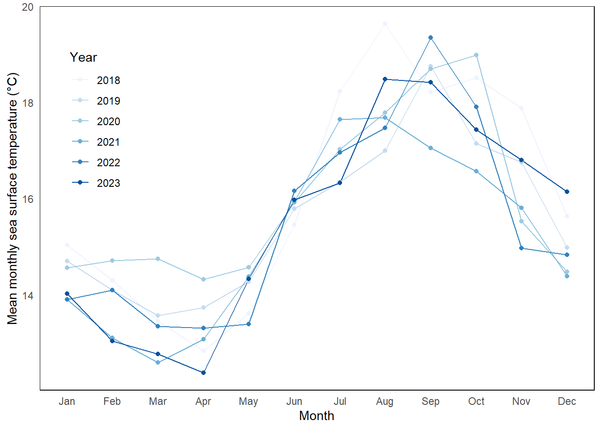
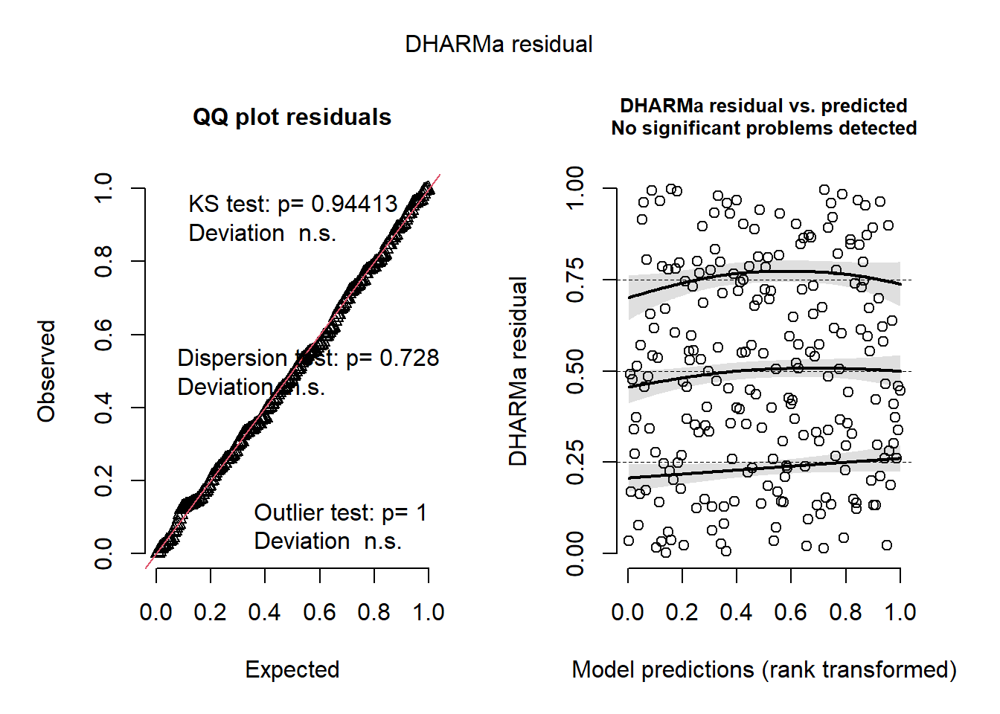
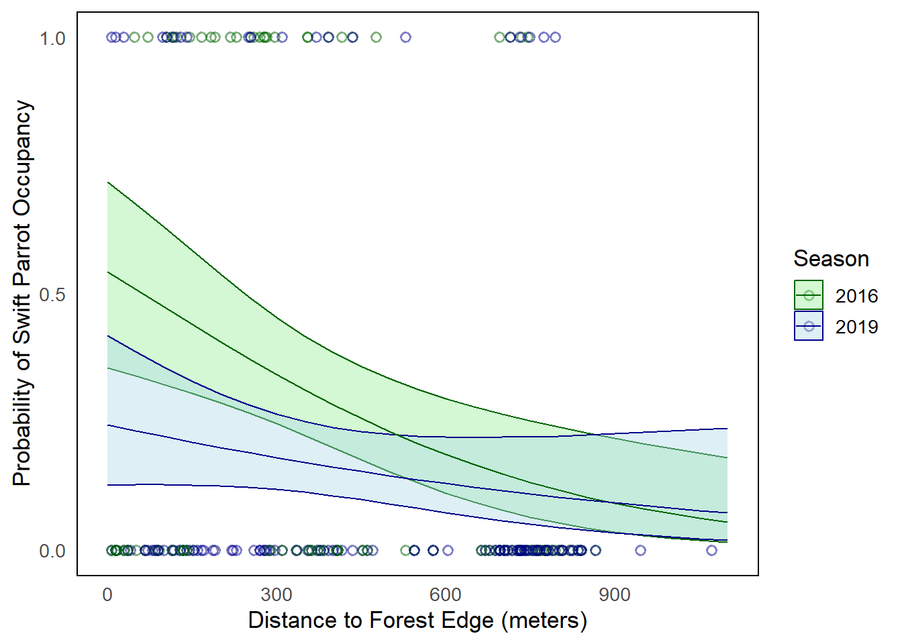

## Packages
library(tidyverse) # general use
library(here) # file organization
library(gt) # creating summary tables
library(flextable) # creating summary tables
library(janitor) # cleaning data frames
library(lubridate) # organize dates and time
library(DHARMa) # run diagnostics
library(MuMIn) # model selection
library(ggeffects) # getting model predictions
## Data
sst <- read_csv(here("../data/SST_update2023.csv")) #load SBC data set
nest_boxes <- read_csv("../data/occdist.csv") #load nesting data setENVS-193DS Final
View this repository on GitHub
Problem 1:
a.
[In part 1, they likely used a simple linear regression. This is because they were examining the relationship between two continuous variables. The variables are distance from head water in km and annual total nitrogen load in kg/yr. The p-value likely tested whether there was a statistically significant linear relationship between the two measured variables.
In part 2, they likely used a one-way Analysis of Variance test to compare average nitrogen load based on multiple sources (categorical). The ANOVA test compares the means of a continuous response variable (nitrogen load) across multiple categorical groups.]
b.
[Another test that would beneficial to this analysis would be the Post-hoc comparison. ANOVA tells us that there is at least one group mean that is statistically different from the others, but does not specify which one. A post-hoc comparison would test each group of nitrogen sources against each other indicating differences in where major nitrogen load occurs.
I would also recommend stating summary statistics for respective groups including the mean, standard error, and sample size. This would allow us to understand the magnitude and reliability of the data for each location while providing context for the situation.]
c.
[Part 1: The results from this simple linear regression showed that sites farther from the headwaters on the San Joaquin River tended to have higher total nitrogen loads (test statistic = …, df = …, p = 0.03, α = …, sample size =…). This pattern likely reflects input of nitrogen from runoff and other anthropogenic sources which accumulates as the water moves downstream.
Part 2. The ANOVA comparisons show that average nitrogen loads differed among source types (F = …, DF = …, p = 0.02, α = …, sample size = …, SS = …). This suggests that different land uses contribute variably to nitrogen pollution levels. The post-hoc test compares each group against each other showing (diff = …, CI = …, p = …) indicating that specific sources could be targeted to help reduce the nitrogen load.]
Problem 2:
a.
sst_clean <- sst |> #create a new clean data frame
mutate( #mutate function
date = ymd(date), #change date column to proper format
year = year(date), #extract year from the date column
month = month(date, label = TRUE, abbr = TRUE) #extract moonth from date column but abbreviate each name
) |>
filter(year >= 2018) |> #only keep years 2018 and more recent
group_by(year, month) |> #group data by year and month
summarize(mean_monthly_sst = mean(temp, na.rm = TRUE), #calculate average SST for each group (year-month)
.groups = "drop") |> #ungroup the results are summarizing
mutate( #mutate function
year = factor(year), #convert year into a faccot
month = factor(month, levels = month.abb, ordered = TRUE) #order month from Jan to Dec
)str(sst_clean) #display the structure of the data frametibble [72 × 3] (S3: tbl_df/tbl/data.frame)
$ year : Factor w/ 6 levels "2018","2019",..: 1 1 1 1 1 1 1 1 1 1 ...
$ month : Ord.factor w/ 12 levels "Jan"<"Feb"<"Mar"<..: 1 2 3 4 5 6 7 8 9 10 ...
$ mean_monthly_sst: num [1:72] 15 14.3 13.5 12.8 13.6 ...slice_sample(sst_clean, n = 5) #display the first 5 rows of the table# A tibble: 5 × 3
year month mean_monthly_sst
<fct> <ord> <dbl>
1 2018 Jun 15.5
2 2018 Apr 12.8
3 2021 Apr 13.1
4 2022 Nov 15.0
5 2021 Feb 13.1b.
ggplot(data = sst_clean |> #load clean data set
mutate(year = factor(year, levels = sort(unique(year)))), # make sure order is separated by year (to make discrete colors for the gradient)
aes(x = month, #set x axis months
y = mean_monthly_sst, #set y axis to mean monthly temperature
group = year, #separate by year
color = year)) + #make each year its own individual color
geom_line() + #make the lines
geom_point() + #make points
scale_color_brewer(palette = "Blues", name = "Year") + #create color gradient for specific years, had to use brewer to get proper legend configuration
labs(x = "Month", #label x axis months
y = "Mean monthly sea surface temperature (°C)", #label y axis mean monthly sea surface temperature
color = "Year")+ #make the legend title Year
theme_minimal()+ #change theme to minimal
theme(panel.grid = element_blank(), #remove grid
panel.background = element_rect(fill = "white", color = "black"), #make background white and black border
legend.position = c(0.1, 0.7), #position the legend in the top left corner
legend.background = element_blank()) #remove the black border around the legend Warning: A numeric `legend.position` argument in `theme()` was deprecated in ggplot2
3.5.0.
ℹ Please use the `legend.position.inside` argument of `theme()` instead.
Problem 3:
a.
[The 0s and 1s in this data set represent species-specific or occupancy status for each next box. A value of 1 for ‘sp, cs, or tm’ means the box is occupied by that species and if the value is 1 under the ‘e’ column, the box is empty. Biologically, this allows for analysis of the species occupying the box to assess habitat preference or competition.]
b.
[In this study, the Swift Parrots are the target species for conservation, with nesting boxes placed in a forest to promote their breeding and survival. However, Common Starlings and Tree Martins are more successfully occupying the boxes reducing the effectiveness of this plan by out competing the Swift Parrots.]
c.
[The two “seasons” they compare are data from 2016 and 2019. In 2016, the boxes were newly deployed and by 2019 they had been well established. By 2019, the data showed that the non target birds were the main beneficiaries of the established boxes, potentially out competing the Swift Parrots.]
d.
| Model number | Seasons | Distance to Forest Edge | Model |
|---|---|---|---|
| 0 | No | No | Null: No predictors |
| 1 | Yes | Yes | Saturated: All predictors |
| 2 | Yes | No | The predictor variable is seasons |
| 3 | No | Yes | The predictor variable is distance to edge |
e.
nest_boxes_clean <- nest_boxes |>
janitor::clean_names() #clean the names
# model 0: null model
model0 <- glm(sp ~ 1, # fit glm and set null
data = nest_boxes_clean, # set data frame to nest boxes
family = binomial) #set regression for binary outcome
# model 1: saturated model
model1 <- glm(sp ~ season * edge_distance, # fit glm and multiply both parameters
data = nest_boxes_clean, # set data frame to nest boxes
family = binomial) #set regression for binary outcome
# model 2: season predictor
model2 <- glm(sp ~ season, # fit glm and set season parameter
data = nest_boxes_clean, # set data frame to nest boxes
family = binomial) #set regression for binary outcome
# model 3: edge distance predictor
model3 <- glm(sp ~ edge_distance, # fit glm and set edge distance parameter
data = nest_boxes_clean, # set data frame to nest boxes
family = binomial) #set regression for binary outcomef.
# model 0 diagnostics
res0 <- simulateResiduals(model0) # create standardized residuals using the fitted model
plot(res0) # plot the models created
# model 1 diagnostics
res1 <- simulateResiduals(model1) # create standardized residuals using the fitted model
plot(res1) # plot the models created
# model 2 diagnostics
res2 <- simulateResiduals(model2) # create standardized residuals using the fitted model
plot(res2) # plot the models created
# model 3 diagnostics
res3 <- simulateResiduals(model3) # create standardized residuals using the fitted model
plot(res3) # plot the models created
g.
AICc(model1, # Best fit: season and edge distance
model2,
model3,
model0) |>
# arranging output in descending order of AIC
arrange(AICc) df AICc
model1 4 227.0325
model3 2 229.6716
model2 2 236.3744
model0 1 238.8318[The best model as determined by Akaike’s Information Criterion (AIC) is Model 1, which included interactions between season and distance to forest edge as predictors of Swift Parrot nest box occupancy. This model had the lowest AICc, 227.03, and was at least two units stronger than the next best model. Based on the model diagnostics, there were “No significant problems detected.” The QQ plot residuals showed a KS test p-value of 0.94 which is not significant and demonstrates that the residuals followed a mostly uniformed distribution. The dispersion test also showed a p-value of 0.72 also indicating that the residuals a most follow a uniform distribution. There were no significant outliers.]
h.
model1_predictions <- ggpredict( # create new object
model1, #load data set
terms = c("edge_distance", "season")) |> #choose terms to look at
rename(
edge_distance = x, #set edge distance to x (in the predictions tab)
season = group) # make season equal group so sp is the predicted valuenest_boxes_clean$season <- as.factor(nest_boxes_clean$season) #convert season to a factor in clean data set
model1_predictions$season <- as.factor(model1_predictions$season) #convert season to a factor in predicitions
ggplot(data = nest_boxes_clean, #load dataset
aes(x = edge_distance, #set x axis variable
y = sp, #set y axis to sp occupancy
color = season)) + #color by season
geom_point(size = 2, #set point size to 2
alpha = 0.5, # change the transparency
shape = 21, #create hollow point
stroke = 1)+ #increase stroke thickness
geom_ribbon(data = model1_predictions, #create ribbon (outside of regression)
aes(x = edge_distance, #set x variable to edge distance
y = predicted, # set y variable to predicted
ymin = conf.low, #set the lower bound of the CI
ymax = conf.high, #set the upper bound of the CI
fill = season, #make the fill color match the season
group = season), #the groups are season
alpha = 0.4) + #make the ribbons more transparent
geom_line(data = model1_predictions, #create linear regression
aes(x = edge_distance, #set x to edge distance
y = predicted, #set y to predicted
color = season, # color by group
group = season))+ # group is equal to season
scale_y_continuous(limits = c(0, 1), # set y axis boundary
breaks = c(0, 0.5, 1))+ #set the marker points
scale_color_manual(values = c("2016" = "darkgreen", #make linear line and points dark green
"2019" = "darkblue"))+ #make linear line and points dark blue
scale_fill_manual(values = c("2016" = "lightgreen", #make the ribbon light green
"2019" = "lightblue"))+ #make the ribbon light blue
labs(x = "Distance to Forest Edge (meters)", #set x axis label to Distance to Forest Edge (meters)
y = "Probability of Swift Parrot Occupancy", #set y axis label to Probability of Swift Parrot Occupancy
color = "Season", #set legend colors
fill = "Season") + #set legen fill
theme_minimal(base_size = 13) + #change theme to minimal
theme(
panel.grid = element_blank(), #remove grid
panel.background = element_rect(fill = "white", color = "black") #make background white and border black
)
i.
[Figure 1: Swift Parrot nest box occupancy declines with increasing distance to the forest edge. Data Source: Stojanovic et al. 2020 occdist.csv, https://doi.org/10.5061/dryad.83bk3j9sb Lines represent the predicted probability of Swift Parrot occupancy across a range of distances to forest edge (meters), with separate curves for each season (2016 and 2019). Shaded ribbons represent a 95% confidence interval for their respective curves. Hollow points represent individual observations of occupancy (1 = occupied, 0 = unoccupied). Colors represent season (2016 = green, 2019 = blue)]
j.
predicted_probs <- ggpredict( #create new object
model1, #load data set
terms = c("edge_distance [0,900]", "season") # set two specific distances by season
)
print(predicted_probs) #view results# Predicted probabilities of sp
season: 2016
edge_distance | Predicted | 95% CI
--------------------------------------
0 | 0.54 | 0.36, 0.72
900 | 0.09 | 0.04, 0.22
season: 2019
edge_distance | Predicted | 95% CI
--------------------------------------
0 | 0.24 | 0.13, 0.42
900 | 0.09 | 0.03, 0.23k.
[In 2016 and 2019, Swift Parrots were more likely to occupy nest boxes located closer to the edge of the forest (0 meters) than those farther away (900m). In 2016, the predicted probability of occupancy at the edge of the forest was 0.54 (95% CI: 0.36, 0.72), and at 900 meters was 0.09 (95% CI: 0.04, 0.22). In 2019, the trend was similar but with lower probabilities with 0.24 (95% CI: 0.13, 0.42) at 0 meters and 0.09 (95% CI: 0.03, 0.23) at 900 meters, indicating a decrease in Swift Parrot Occupancy.
Figure 1 also illustrates the decline in Swift Parrot occupancy as distance from the edge increases as seen in both curves sloping down and to the right. This trend was more prominent in 2016. Biologically, this pattern may indicate that Swift Parrots are being out competed because from 2016 to 2019, the Starlings increased occupancy rates closer to the edge of the forest while Swift Parrot rates declined.]
Problem 4.
a.
[My visualizations are much different in that I began (in HW 2) representing the data in a way that showed specific data points and values that were quantitative (bar and box/whisker plots). My affective visualization on the other hand had no quantitative data and included colors and shapes to convey values.
Some similarities between all of my visualizations are that they all include geometric rectangles to show the duration of practice. Each figure includes my response variable, hours practiced. The affective visualization is also similar to my first figure in HW 2 because they both include what instrument was practiced.
The most prominent trend I see throughout the visualizations is that on average, I practiced drums for the longest amount of time. The box plot for drums was clearly higher than the other instruments, and the affective visualization mostly had brightly red colors indicating the same trend. The other variables included in each plot were different (ex. meals ate, time on campus, etc.) so it is hard to tell how those trends relate to each other.
I received full points and no suggestions for my affective visualization, but there was still room for improvement. To make the visual more intuitive, I switched each instrument to darker colors so they could be differentiated when placed next to each other. I could also incorporate another variable into the visualization, ‘hours on campus,’ using the same concept for the ‘Meals Ate’ variable which is placing an shape on each respective strip with its size correlating to the amount of meals ate/time.]